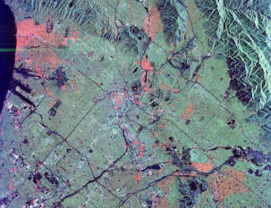

LOCAL FAVORITES
LOS ANGELES:
KPFK 90.7 FM
KXLU 88.9 FM
Museum of Contemporary Art, Los Angeles
REDCAT: Roy & Edna Disney CalArts Theater
Museum of Jurassic Technology and Center for Land Use Interpretation in Culver City
The Institute for Figuring
leiminspace and Ooga Booga in Chinatown
Echo Park Film Center
Vidiots Foundation
Watts Towers
The Last Bookstore, Downtown LA
Skylight Books, Los Feliz
Amoeba Music, Hollywood
Langer's Deli, Westlake
Shambhala Meditation Center of Los Angeles
Quality Seafood, Redondo Beach
Angels Flight Railway
Randy's Donuts, Inglewood
Dr. Hogly Wogly's Tyler Texas BBQ, Van Nuys
Astro Family Restaurant, Silver Lake
Little Ethiopia
The Korean Bell of Friendship and Angels Gate Park, San Pedro
The Cinefamily, Fairfax
Roscoe's Chicken and Waffles
Jitlada Thai, Hollywood
Big Dean's Ocean Front Cafe, Santa Monica
Venice Sidewalk Cafe, Venice
La Brea Tar Pits, Hancock Park
Larchmont Village
Mama Lu's Dumpling House, Monterey Park
Taix French Country Cuisine, Echo Park
Taylor's Steakhouse, Koreatown
Chosun Galbee, Koreatown
Bergamot Station, Santa Monica
Bargain Camera Show at the Pasadena Elks Lodge
Revolutionario North African Tacos, University Park
Azla Ethiopian Vegan Cuisine, University Park
Plum Tree Inn, Chinatown
World 8, Koreatown
BERKELEY:
KALX 90.7 FM UC Berkeley student and community radio
KPFA 94.1 FM Pacifica Radio
Top Dog
Moe's Books on Telegraph
Berkeley Art Museum & Pacific Film Archive
Nefeli Caffe on Euclid
Gregoire Restaurant off Shattuck in the Gourmet Ghetto
The Sound Well on University
Vik's Chaat & Market on Fourth St.
Bancroft Clothing Company
Gordo Taqueria on College
University Press Books on Bancroft
Pegasus Books on Shattuck
Games of Berkeley
Berkeley Bowl
Codornices Park and the Berkeley Rose Garden
La Val's Pizza and Stuffed Inn on Euclid
924 Gilman
Plearn Thai Restaurant on University
Berkeley Flea Market at Ashby BART station
Picante near 6th and Gilman
Urban Ore, near Ashby & San Pablo
UPSTATE SC:
WSBF 88.1 FM Clemson
Greenville County Museum of Art
The Dixie Gem, Greenville
Poor Richard's Booksellers, Easley
Pete's No. 6, Easley
Super Taco, Clemson
Horizon Records, Greenville
Don Jones Custom Stereo, Greenville
Zorba Lounge, Greenville
O-CHA Tea Bar, Greenville
Greenville City Parks including Falls Park on the Reedy and Cleveland Park
Sunrift Adventures, Travelers Rest
Addys Dutch Cafe & Restaurant, Greenville
Coffee Underground, Greenville
Pickens County Museum of Art & History, Pickens
Pickens Bargain Exchange Flea Market, Pickens
Easley Area Museum, Easley
Brock's, Pickens
The Junction, Gowensville
The Beacon Drive-in, Spartanburg
Spartan Photo Center, Spartanburg
Pita House, Greenville
Deli Korner, Spartanburg
Farm Equipment & Supplies, Pickens
Bee Well Honey Farm & Supply, Pickens
Happy Cow Creamery, Pelzer
Swad vegetarian Indian food, Greenville
Hagood Mill, Pickens